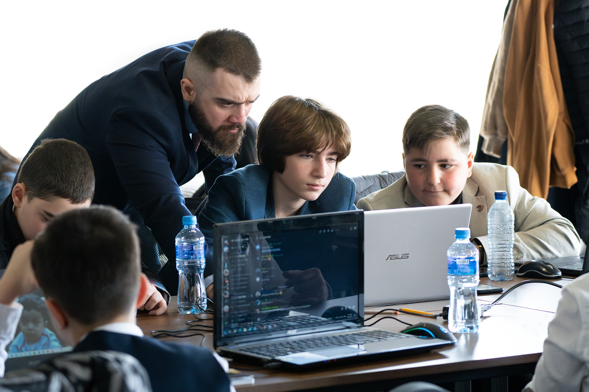

Home
GOA არის საუკეთესო პროგრამული აკადებია,
აქ შეისწავლით: PYTHON, HTML, JAVA SCRIPT და ხელოვნურ ინტელექტს.
GOA არის საუკეთესო არამარტო საქართველოში, არამედ სხვა ქვეყნებშიც.
აქ არამარტო პროგრამებს არამედ მეგობრებთან ურთიერთობებსაც ისწავლი
რადგან GOA ში გვაქვს შეხვედრები სადაც უფრო ვახლოვდებით ერთმანეთთან
ეს შეხვედრები არის 2 ტიპის ერთი ღია ცის ქვეშ ერთი დახურულ სივრცეში
თუმცა ღია სივრცეში უფრო ვერთობით.
GOA-ში შემოსვლის თანავე ბავშვი ირჩევს რაზმის ლიდერს.
რაზმის ლიდერის მოვალეობაა აკონტროლოს ბავშვი, კონტაქტი ჰქონდეს მშობელთან
და თუ საჭიროა დავალების შესრულებაში დაეხმაროს მას.
ჩვენი გამოცდილი პროფესიონალი მენტორები და რაზმის ლიდერები ბავშვს დაეხმარებიან
ყველანაირი პრობლემის გადაჭრაში.

About us
გაკვეთილები
გაკვეთილები ტარდება კვირაში 1, 2, 3-ჯერ, ეს უკვე თქვენზეა დამოკიდებული.
გაკვეთილის ხანგრძლივობაა 2საათი, სადაც 1საათის შემდეგ არის 10წუთიანი დასვენება.
დასვენებაზე 5წუთის მანძილზე ვვარჯიშობთ, ხოლო დანარჩენი 5წუთი რასაც გვინდა იმას ვშვებით.
გაკვეთილის მეორე ნახევარში ვაკეთებთ classwork-ს, რომელსაც გვიმოწმებს
მასწავლებელი ან მისი ასისტენტები.
გაკვეთილზე აუცილებლად გვაქვს კამერები ჩართული და ვართ აქტიურები.
მასწავლებელი გაკვეთილის ჩატარების დროს იყენებს აპლიკაცია „Sololearn”-ს.
GOA land
GOA land-ის დროს ბავშვები იკრიბებიან ღია ცის ქვეშ, სადაც დახვდებათ გასართობი სივრცე.
იქ ისინი შეხვდებიან და გაიცნობენ გოას წევრებს, თავიანთ რაზმის ლიდერებს და დაკავდებიან
გასართობი საშუალებებით.